The ability to segment features from remotely sensed data is increasingly providing more detailed information about the world we live in. This data is used in a plethora of pursuits ranging from conservation, government and business. This example, segments the locations of buildings using two types of data, LIDAR (Light Detection and Ranging) and NAIP (National Agriculture Imagery Project) imagery. The motivation for this project is to limit hand digitization of aerial imagery that would be used in a disaster risk assessment model for an insurance company. This data would in turn affect insurance premiums, which can change product costs for the company. Thus the most update and accurate data is the cutting edge in company competitiveness. Building footprint data is usually held at the county level; however, this data may be several years to decades out of date or nonexistent. Some county’s database's only have address point locations which gives no insight to the number of structures on a given property. This outdated information does not show the current distribution of structures especially in rapidly developing areas. This lack of up to date data lowers the accuracy of the disaster risk assessment models, leaving insurance companies and their customers behind the benefits of the modern information curve. The company that can afford to acquire up to date LIDAR imagery proves to lead the pack on disaster risk models and the decision making information they contribute.
In this case the LIDAR data is used to create a DSM (digital surface model) which is a representation of the earth surface and can be thought of as an elevation image were each pixel represent a height. DSM show the tops of structures and tree canopies along with the bare earth were visible. The structure tops are what we are interested in and what we want to segment. To do this, we need to create a DEM (digital elevation model) from the DSM. A DEM is a lot like the DSM in that it displays elevation, however DEMs differ in that structures and vegetation are not represented. In a sense DEMs only show the bare earth. With a DEM and DSM of the same area we can normalize the terrain by subtracting the DSM from the DEM. In essence, this normalization of the DSM removes hill features as seen below.
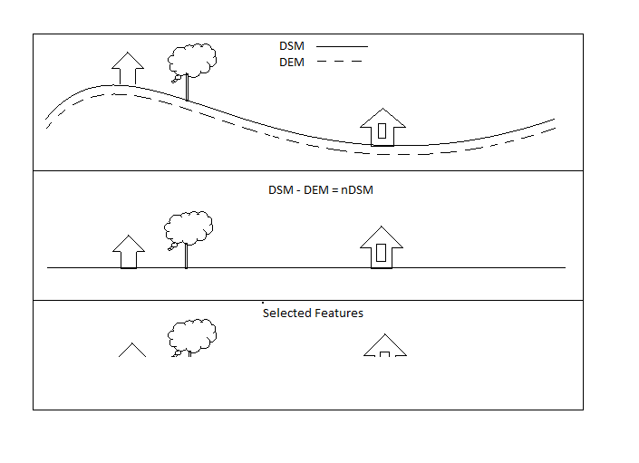Once we have normalized the DSM we can select features above a defined elevation. The selection will consist of tall vegetation and structures. Now that we have the vegetation and structure data, we still need to remove the vegetation from our selected features. This is where the NAIP imagery comes into play. In the NAIP imagery there is a nir (near infrared ) band which can be thought of as another color we can’t see. Anyway, healthy plant life is very bright in this “color” and it is so much brighter that it makes most other buildings look dark, as seen in the image below. The red in the image below is this nir band and we can see that all the plant life is red. So the fact that most building tops and tree canopies have different reflectance values means we can select a threshold that will segment structures from trees.
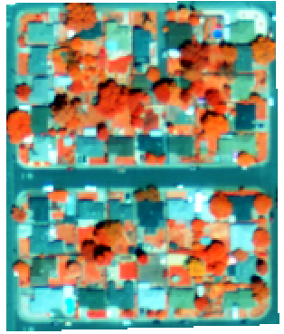This is all well and good, but now we need to tie R into our process. Listed below are steps we will take from the raw DSM data to making the structure centroids.
library(sp)
library(rgdal)
library(dplyr)
library(raster)
library(rgeos)
library(wvtool)
library(graphics)
The code below represents how we import our imagery and shapefiles. The imagery includes our DSM and NAIP rasters, and a shapefile that is the ground truth locations of structures.
#these are the different test sites. NOTE open each test site one at a time making sure to use '#'on sites that are not used.
#------------------------------------------------------------
#stat_points <- readOGR(dsn="data/ShapeFiles", layer="grd_pts_lar") #shapefile
#dsm_min <- raster('data/Rasters/DSM_lar.tif')
#NAIP <- raster('data/Rasters/NAIP_lar.tif', band = 4)
#------------------------------------------------------------
#stat_points <- readOGR(dsn="data/ShapeFiles", layer="grd_pts") #shapefile
#dsm_min <- raster('data/Rasters/DSM_door.tif')
#NAIP <- raster('data/Rasters/NAIP_door.tif', band = 4)
#------------------------------------------------------------
#stat_points <- readOGR(dsn="data/ShapeFiles", layer="grd_pts_job") #shapefile
#dsm_min <- raster('data/Rasters/DSM_job.tif')
#NAIP <- raster('data/Rasters/NAIP_job.tif', band = 4)
#------------------------------------------------------------
stat_points <- readOGR(dsn="data/ShapeFiles", layer="stat_points") #shapefile
dsm_min <- raster('data/Rasters/dsm_min.tif')
NAIP <- raster('data/Rasters/naip.tif', band = 4)
#------------------------------------------------------------
Below is our DSM and NAIP rasters. As you can see the buildings in the DSM are pretty easy to see, but there is a bit of noise and some trees we need to remove. In the NAIP imagery structures are a little harder to see, but its the green areas, the vegetation, that is important to us. The values in the DSM represent elevation and in the NAIP imagery the values are nir (near infrared) brightness values. Remember, high nir values show vegetation well.
plot(dsm_min, main='DSM')
plot(NAIP,main='NAIP')
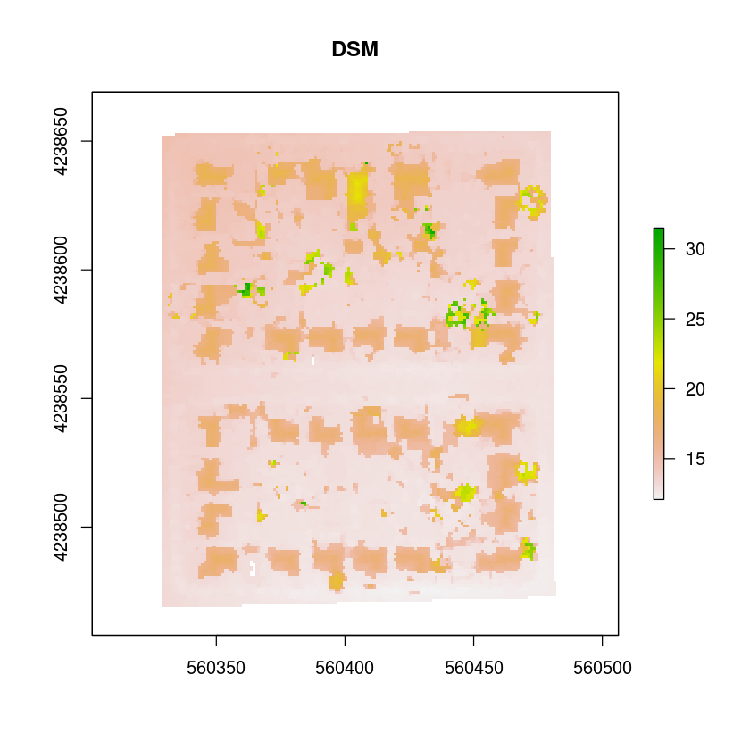
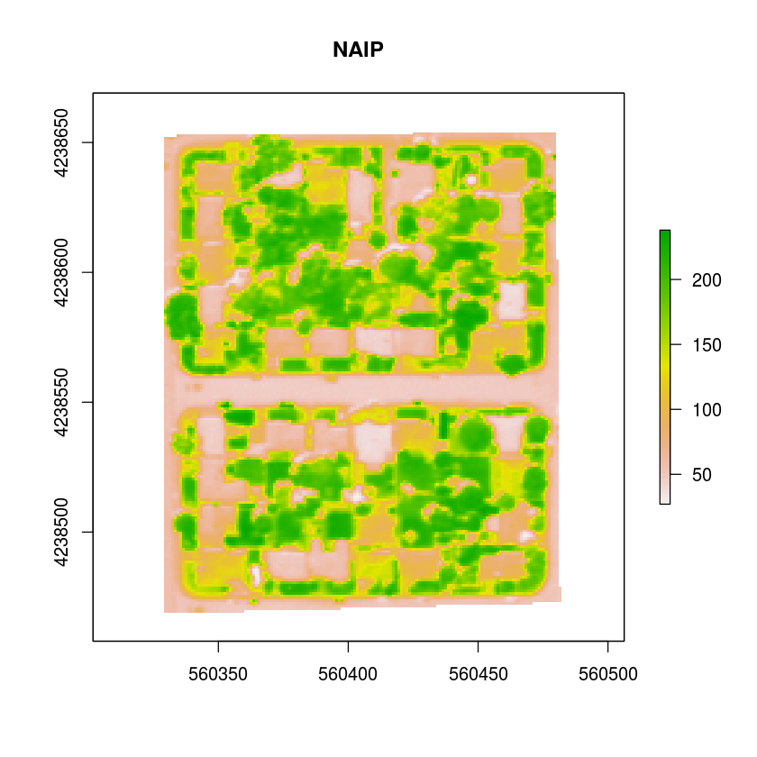
Now we need to create a DEM from the DSM, and this is done by selecting all values below the third quartile of the image. By doing this we create a grid of ones and zeros for regions above and below the third quartile. We need to populate this grid of ones and zeros with the elevation values for the areas denoted with a one, and we use a masking function to do this. The output raster has holes from where the zero values were and we will fill them in the next step.
para<-summary(dsm_min)
dsm_min_less <- (dsm_min < round(para[4]))
dsm_min_holes <- mask(dsm_min, dsm_min_less,inverse=TRUE, maskvalue=1)
plot(dsm_min_holes, main='DSM<15')
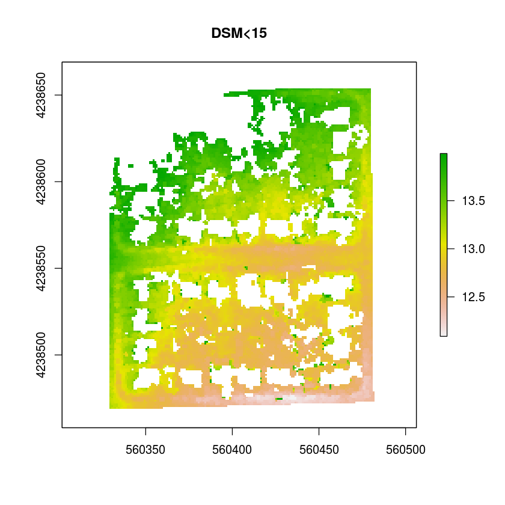
To create a DEM from this data we need to fill the NA values (the holes) with numerical values. The function and loop below does this by taking the mean of a group of pixels and replaces the center pixel of the group with the mean value. This group of pixels or kernel moves around the image until all NA values are gone. Note the gradient of the model surface where its high in the upper left and low in the bottom right.
fill.na <- function(x, i=5) {
if( is.na(x)[i] ) {
return((mean(x, na.rm=TRUE)) )
} else {
return((x[i]) ) }
}
#fileter kernalsd
f3 <- matrix(1,3,3)
dem <- focal(dsm_min_holes, w = f3, fun = fill.na, pad = TRUE, na.rm = FALSE )
while (summary(dem)[6]>0){
dem <- focal(dem, w = f3, fun = fill.na, pad = TRUE, na.rm = FALSE )
}
plot(dem, main = 'the DEM')
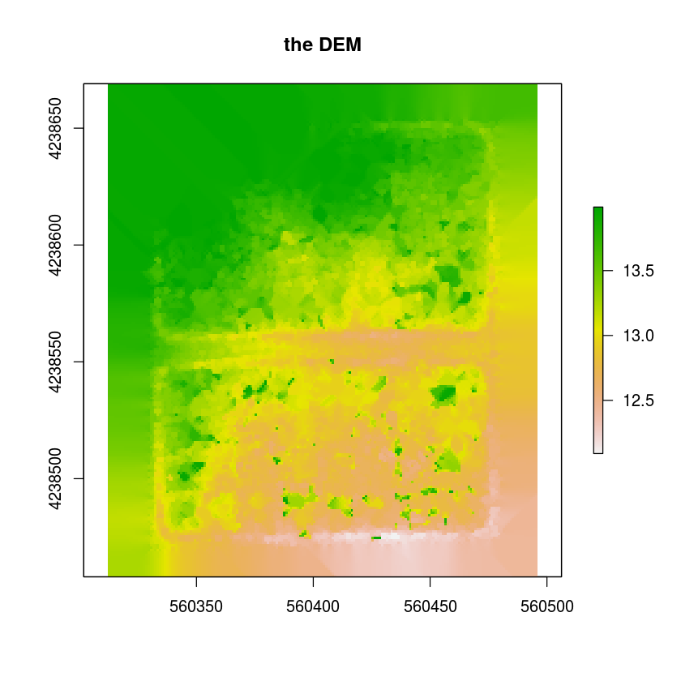
Great! As you can see we filled all the holes and maintained the general trend of the ground’s slope. We can still see topographic relief from the streets which is good because the DEM needs to mimic the ground of the DSM as close as possible. Now that we have the DEM we can subtract the DSM from it.
nDSM <- dsm_min - dem
plot(nDSM, main='nDSM')
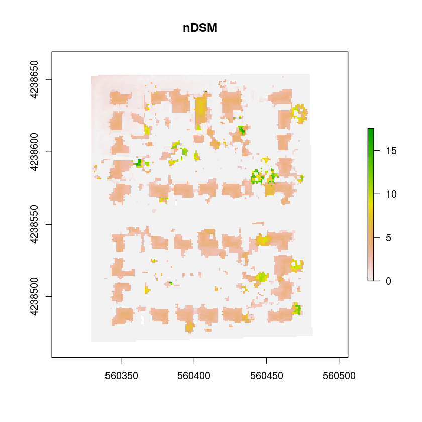
Remember the gradient in the original DSM, its gone now, the ground across the raster is roughly the same elevation. This means that all features have about the same starting elevation point. Now we can select the features above the bare earth that represent our buildings and trees without the effects of a sloping terrain. The image below shows all of our buildings and trees, and all the values are ones and zeros again.
features <- (nDSM > (round(summary(nDSM)[5]/6)) )
plot(features, main = 'Buildings and Trees from nDSM')
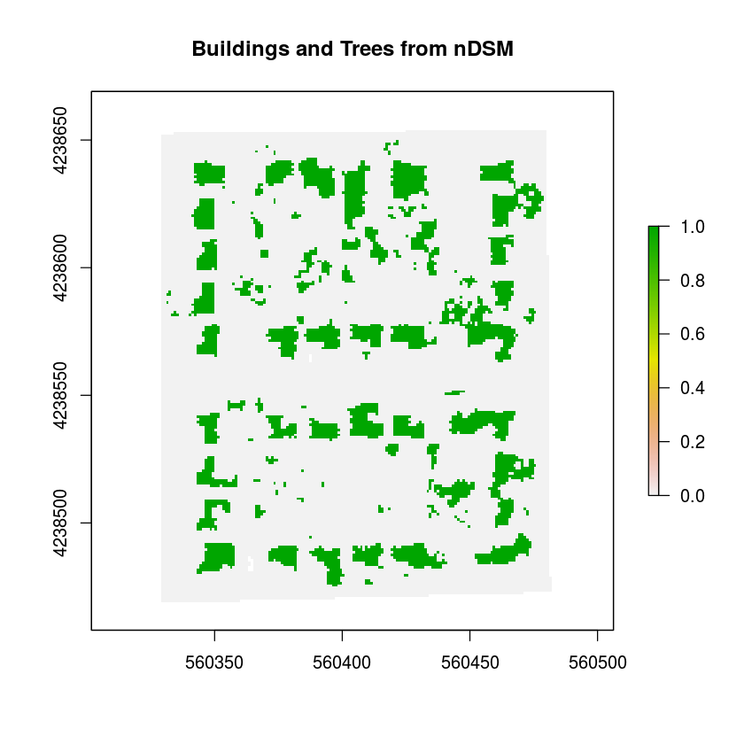
Next, we will replace all the zeros with corresponding NAIP imagery values using a mask. The code below masks the nDSM selected features and applies the NAIP imagery values to the features. We can see in the figure that all of the buildings have different values from the green tree fragments.
naip_features <-mask(NAIP, features, inverse=FALSE, maskvalue=0, updatevalue=NA, updateNA=FALSE)
plot(naip_features, main = 'NAIP Values Painted On nDSM Features')
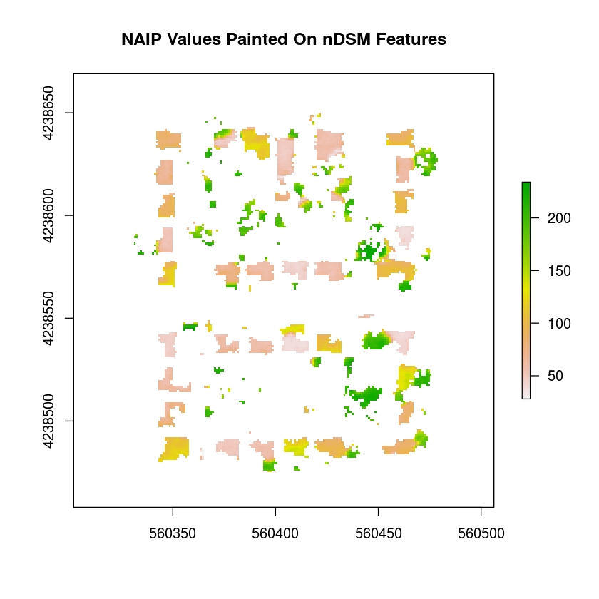
By selecting values that represent rooftops we finally segment the building from the nDSM.
strutures<-(naip_features<(round((summary(naip_features)[4])+(summary(NAIP)[4]))/2))
plot(strutures, main='Buildings!')
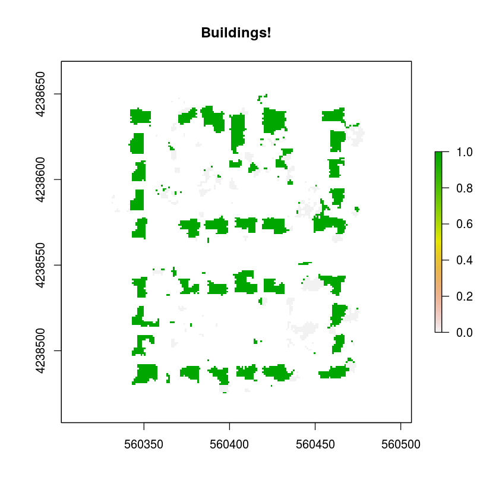
With this information we will make vector data which will include our final product the centroids of the buildings. Now we will changing a raster into a polygon, just one polygon, with the raster to polygon function.
pol <- rasterToPolygons(strutures, fun=function(x){x==1}, dissolve=TRUE)
plot(pol, main='Building Polygon, just one')
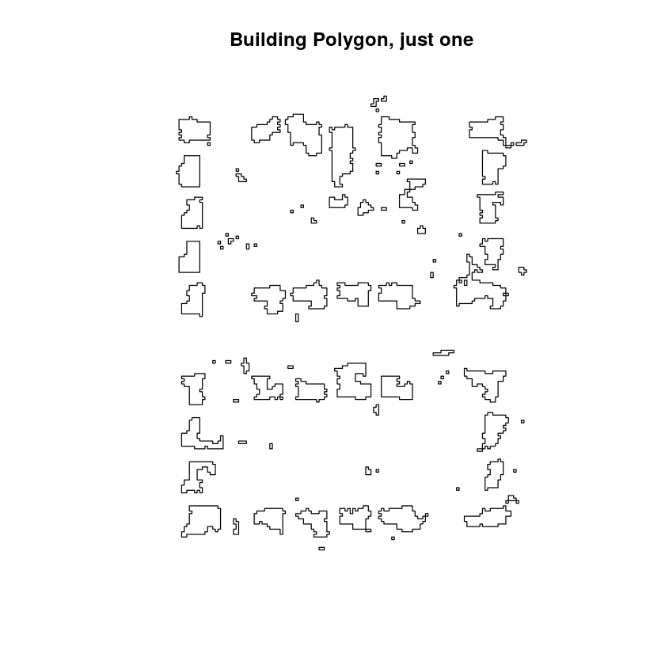
In the following code we dis-aggregate the single polygon above into many polygons by their conductivity. Then we need to add an area attribute to each polygon so we can filter the polygons by their size, removing tree remnants and noise. Unfortunately this causes us to inadvertently remove the smallest of the structures like tool sheds.
feet <- disaggregate(pol)
feet$AREA <-area(feet)
footprints <- feet[feet$AREA > (24),]
plot(footprints, main='Building Polygons')
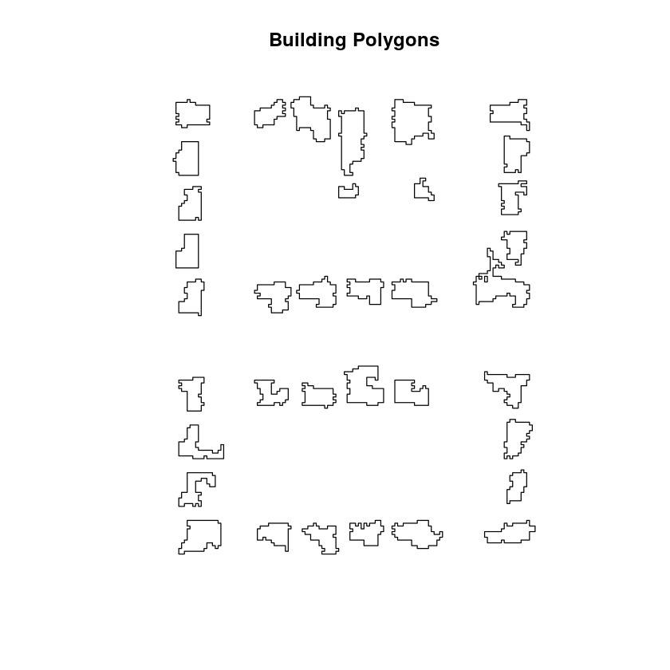
It's now time to place centroids at the center of each building polygon. This is done by taking the coordinates for each of the polygon's nodes and calculating the center point. We then input the coordinates into a spatial points data frame. The plot below shows our DSM as the background, the polygon centroid are symbolized by x and the ground truth building locations are the circles. We can see most of the generated points fall within the ground truth locations!
bld_pts <- SpatialPointsDataFrame(coords=coordinates(footprints), data=footprints@data,
proj4string=CRS("+proj=utm +zone=10 +datum=NAD83 +units=m +no_defs +ellps=GRS80 +towgs84=0,0,0 "))
plot(nDSM, main = 'nDSM, truth Points and Model Generated Points')
points(bld_pts,pch=3)
points(stat_points, cex= 3)
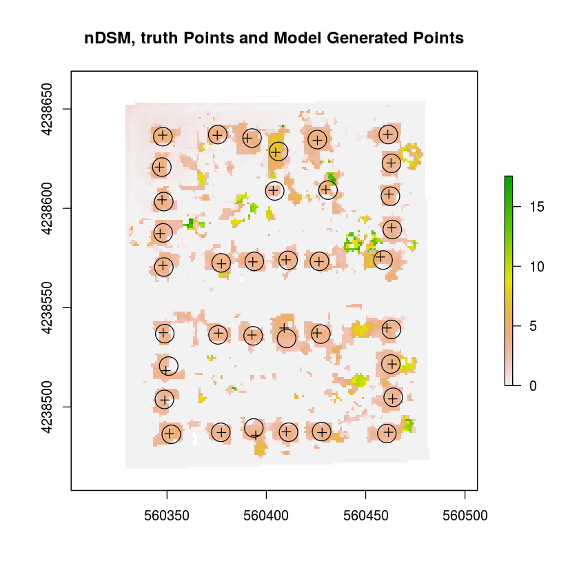
Below is the summation of the steps above. This model has three inputs, the two rasters and a polygon size which removes polygons below that value.
Finn <- function(dsm,naip,poly_area){
#------------Remove Features to make bare surface------------
para<-summary(dsm) # finds 3rd Qu. of the data which is used to determine what features are above the bare earth
dsm_min_less <- ((dsm) < round(para[4])) # removes those features
dsm_min_less[is.na(dsm_min_less)] <- TRUE # changes the data from logic to number
dsm_min_holes <- mask((dsm), dsm_min_less,inverse=TRUE, maskvalue=1) #repopulates the raster with bare earth values
#--------------Fills Hole In Bare Surface--------------
fill.na <- function(x, i=5) { #fill focal fucntion
if( is.na(x)[i] ) {
return( (mean(x, na.rm=TRUE)) )
} else {
return( (x[i]) )}}
f3 <- matrix(1,3,3) #fileter kernalsd
dem <- focal(dsm_min_holes, w = f3, fun = fill.na, pad = TRUE, na.rm = FALSE )
while (summary(dem)[6]>0){
dem <- focal(dem, w = f3, fun = fill.na, pad = TRUE, na.rm = FALSE ) } # till they are filled
#--------------------------------nDSM--------------------------
nDSM<- dsm-dem # normalizes the the DSM so all features have the same starting z value
#-------------------------------- Masking----------------------------
fuzz<-summary(nDSM)
features <- (nDSM > (round(fuzz[5]/6))) # selects features above and below a certain z value
nDSM_features <- mask(nDSM, features, inverse=FALSE, maskvalue=0, updatevalue=NA, updateNA=FALSE) #
naip_features <-mask(naip, features, inverse=FALSE, maskvalue=0, updatevalue=NA, updateNA=FALSE)
strutures <- (naip_features < ((summary(naip_features)[4]) + (summary(NAIP)[4]))/2 )
#---------------------------------------------------------------------------
pol <- rasterToPolygons(strutures, fun=function(x){x==1}, dissolve=TRUE) # takes logic ==1 and turn into polygons
feet <- disaggregate(pol) # makes pol into many polygons
#-----------------------------------------------------------------------------
feet$AREA <-area(feet) # creates and populates a column for the size fo each polygon
footprints <- feet[feet$AREA > (poly_area),] # selects polygons based on size
bld_pts <- coordinates(footprints) # get coordinates for polygons
bld_pts <- SpatialPointsDataFrame(coords=bld_pts, data=footprints@data, # calucates the centoid of the polygons
proj4string=CRS("+proj=utm +zone=10 +datum=NAD83 +units=m +no_defs +ellps=GRS80 +towgs84=0,0,0 "))
}
This is great, but how will the model fair with a different location? Remember back where we imported the data? Well, there are three more sites we can use as different inputs, and the output centroids never goes below 95% accuracy at these locations. The drop in accuracy occurs for several reasons. The first being, that there are objects other than vegetation that emit or reflect near infrared well, these features can be rooftops and in the figure below this effect can be seen. The feature is a white roofed building that reflects very strongly in the near infrared band (green), and is noted by a circle without an x.
stat_points <- readOGR(dsn="data/ShapeFiles", layer="grd_pts_lar") #shapefile
dsm_min<- raster('data/Rasters/DSM_lar.tif')
NAIP<- raster('data/Rasters/NAIP_lar.tif', band = 4)
points<-Finn(dsm=dsm_min,naip=NAIP,poly_area=24)
plot(NAIP)
plot(points, add=TRUE, col='blue')
plot(stat_points , add=TRUE, pch = 1, cex=3)
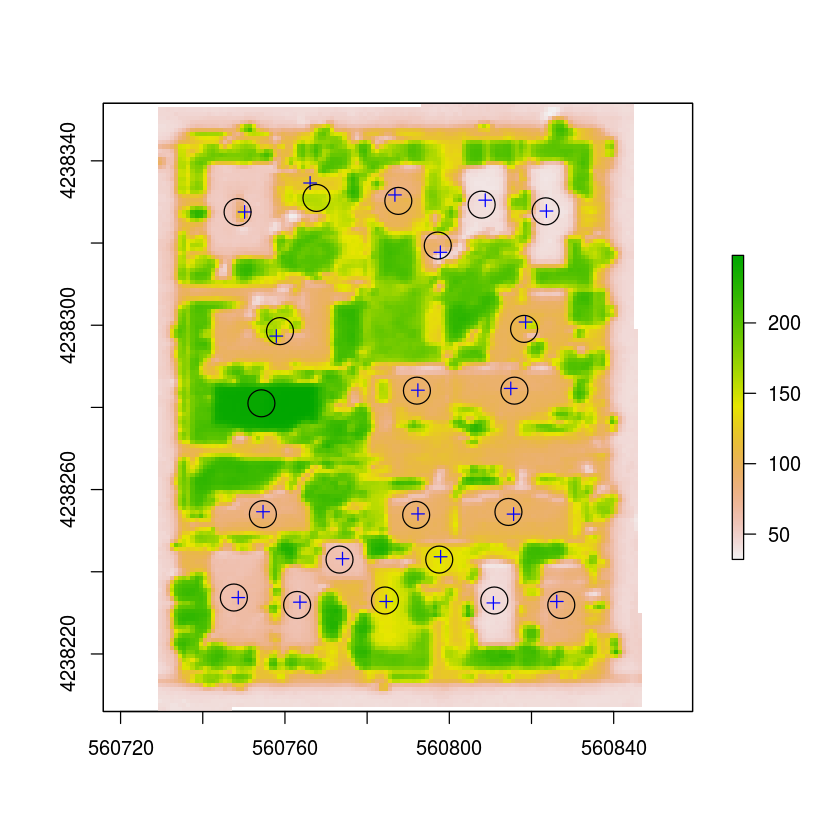
Another source of error is due to the pixel size and structure's distances from each other. When structures are two or less pixels from each other there is a high likelihood that bleed over may connect the two structures and the model will view them as one.
stat_points <- readOGR(dsn="data/ShapeFiles", layer="grd_pts_job") #shapefile
dsm_min <- raster('data/Rasters/DSM_job.tif')
NAIP <- raster('data/Rasters/NAIP_job.tif', band = 4)
points<-Finn(dsm=dsm_min,naip=NAIP,poly_area=38)
plot(dsm_min)
plot(points, add=TRUE, col='blue')
plot(stat_points , add=TRUE, pch = 1, cex=3)
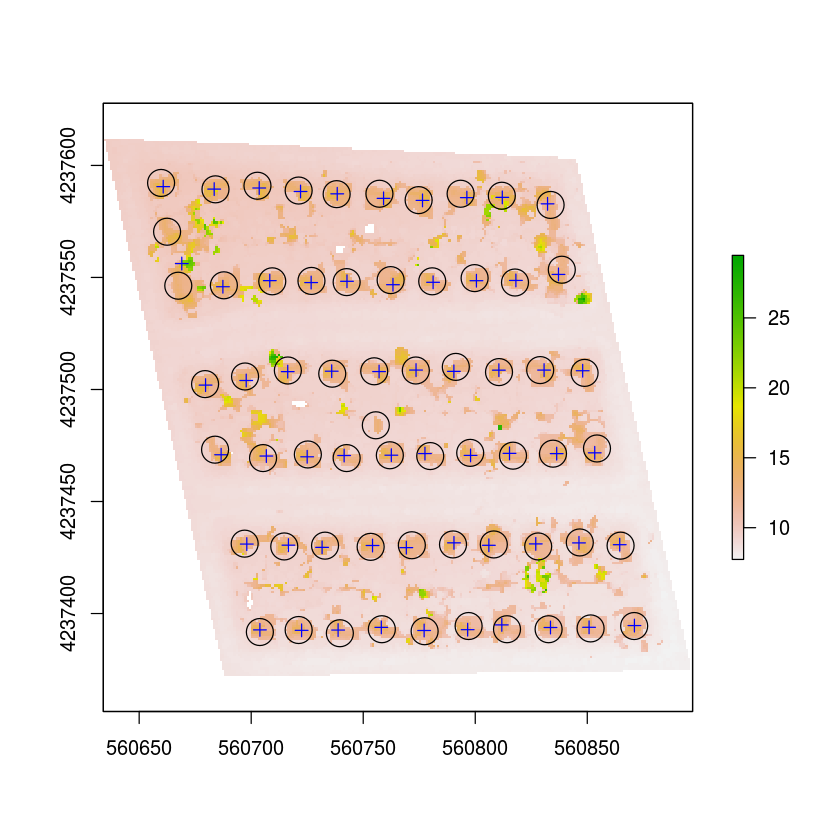
As observed in the breakdown the model has high accuracy for the study area. However, the model has yet to be used in regions with high variations in topography, and since the model needs the highest bare earth region in the image to be lower than the lowest rooftop a dynamic clipping grid is needed for large raster processing. The model has the ability to find structures larger than 24 pixels (24 square meters), and this is a function of the raster’s pixel size. Thus, if the inputs raster’s have a resolution of 0.5 meters the model would be able to find structures larger than 7.5 square meters. However, there is much more work to be done.
This model is apart of a larger ambition to process larger DSM rasters with variation in topography. In which, larger rasters will be dynamically cliped by there slope and aspect properties and the premise that structures are always higher than 3 meters. Furthermore, there is room for improvement in the model’s ability to find structures. Remember the building that was not recorded due to its NIR value? I plan to add more variables to the current model that further increase the accuracy. One thought on this, is to use or make an index that distinguishes the spectral reflectance of rooftops. These improvements will take place starting in April using Python in Robert Kennedy's course.